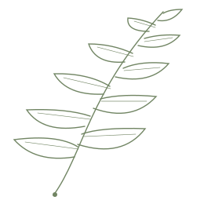

A permit is a decision.
Give it a record of care.
An original application for a fictional conservation nonprofit. Researchers propose fieldwork; independent reviewers consider the impact. The API protects who may see, create and decide.

python3 run.py serve.The fieldwork desk
The decision has a boundary.

Evidence with a narrow claim.
The suite starts the real local server with isolated SQLite databases. It exercises denial paths as well as successful work. Results are regenerated from assertions, not filled into a scorecard by hand.
- Another tenant's read and review request: 404.
- Submitter review and reviewer self-approval: 403.
- Two simultaneous reviews: one success, one conflict.
- Missing/wrong CSRF and foreign origins: rejected.
- Expired, rotated and signed-out sessions: rejected.
The next responsible decision.
Keep the demonstration local. A passing test suite is not a production assurance claim. Python's HTTP server is a lab tool; there is no TLS, identity provider, durable rate-limit service or external immutable audit sink.
A production proposal should fund managed identity, a supported server, deployment threat modelling, browser/accessibility testing and restoration evidence before accepting real field locations.